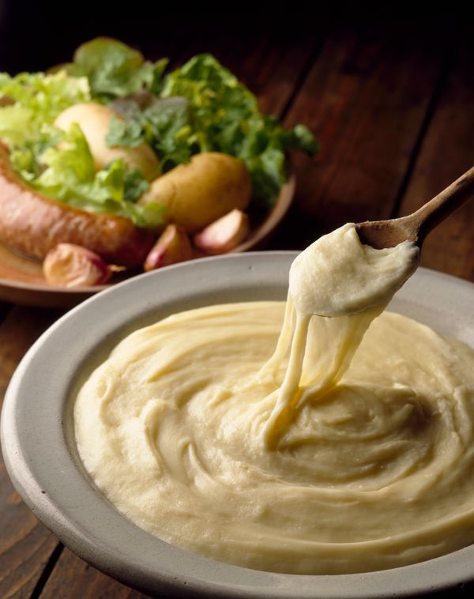

Aligot

Description
L’aligot est une spécialité de l’Aubrac composée de purée de pommes de terre mélangée à de la tomme fraîche, de l’ail et de la crème. Sa texture filante en fait un plat convivial, souvent servi avec des saucisses.
Ingrédients
- Pommes de terre
- Tomme d'Aubrac
- Crème
- Ail
- Beurre
Steps
- Faites cuire les pommes de terre épluchées pendant 25 à 30 min dans une casserole d'eau. Egouttez. Réduisez-les ensuite une purée et assaisonnez avec le beurre, la crème, l'ail pilé, très peu de sel et du poivre.
- Détaillez le fromage en très fines lamelles. Sur feu doux, ajoutez le fromage à la purée
- Pendant au moins 15 min, battez la masse avec une grande cuillère en bois, en formant des "huit", et en la soulevant jusqu'à obtenir une pâte lisse qui se détache des parois de la casserole et qui file
- Servez dans chaque assiette : soulevez un grand ruban d'aligot et coupez-le au ciseau.